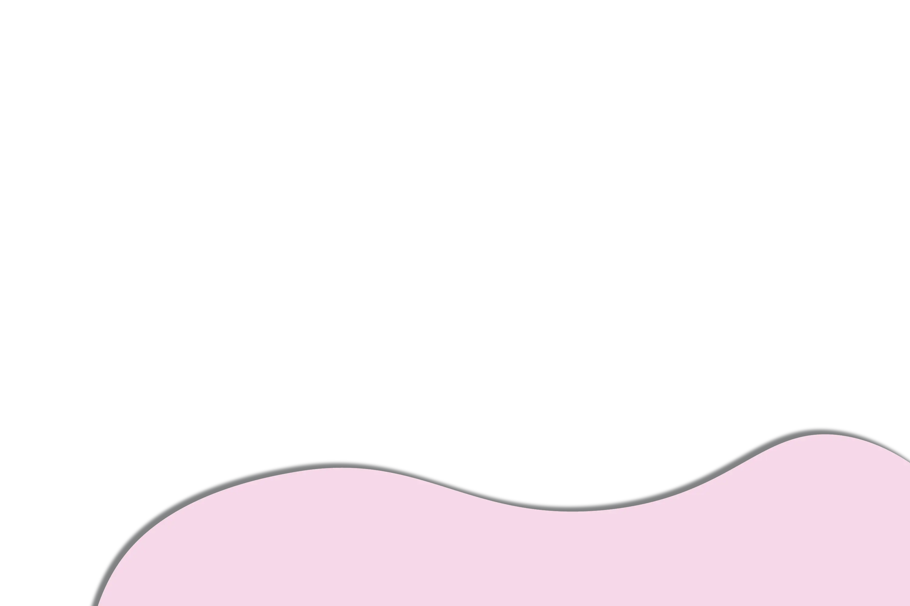
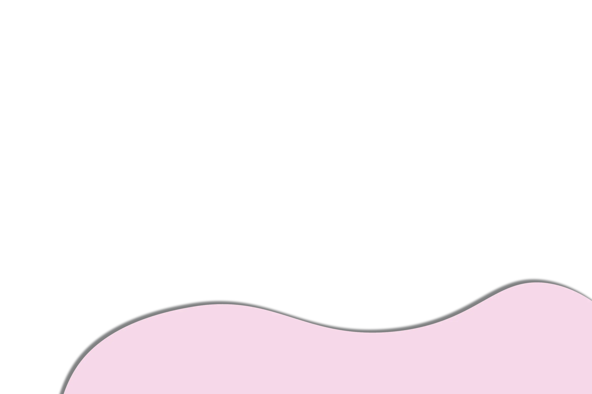
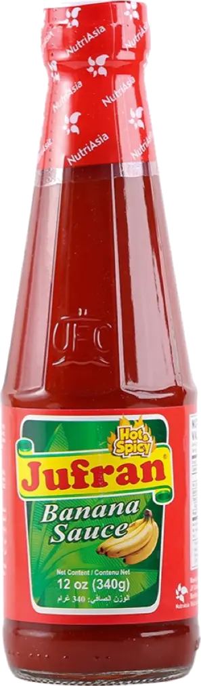
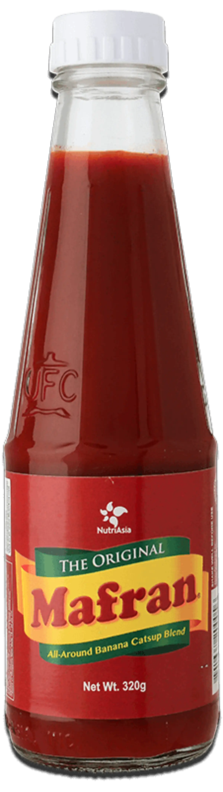
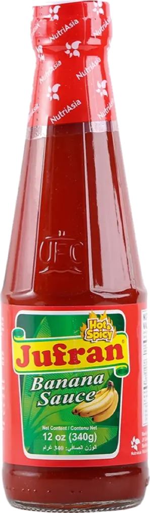
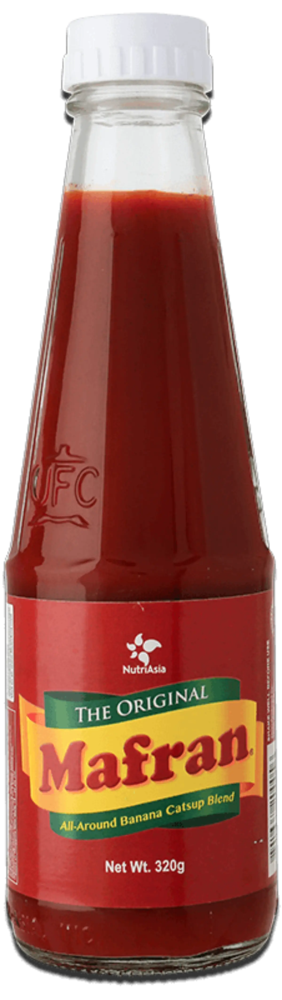

Maria Ylagan Orosa is a Taal-born scientist who was behind the invention of banana ketchup. During World War II, tomatoes were in short supply, so she experimented with locally available ingredients to make ketchup from bananas.
The banana sauce was essentially made up of mashed bananas, vinegar, and spices. Because the brownish-yellow color was unappealing, a little red coloring was added, turning it into what is now known as banana ketchup. In 1942, the first mass-produced banana ketchup was distributed by the Universal Food Corporation (UFC) and it remains a staple to this day.
Back 

 


